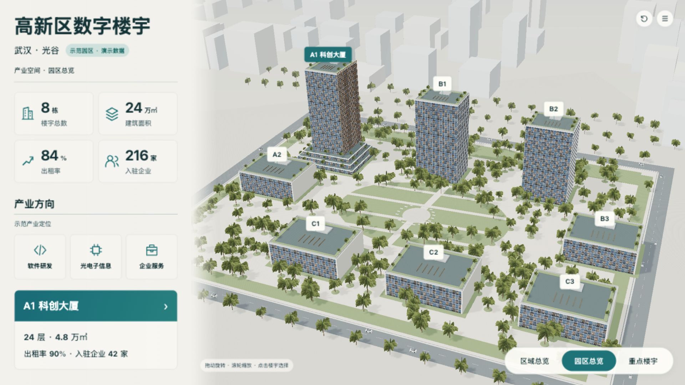
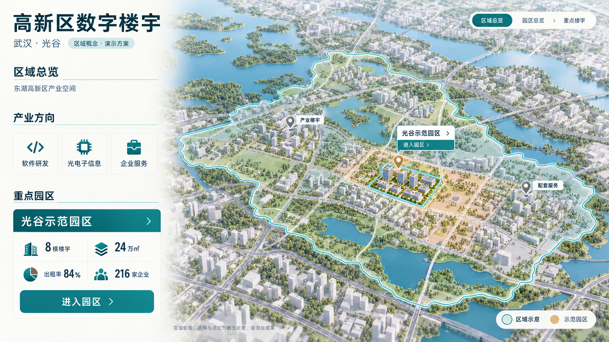
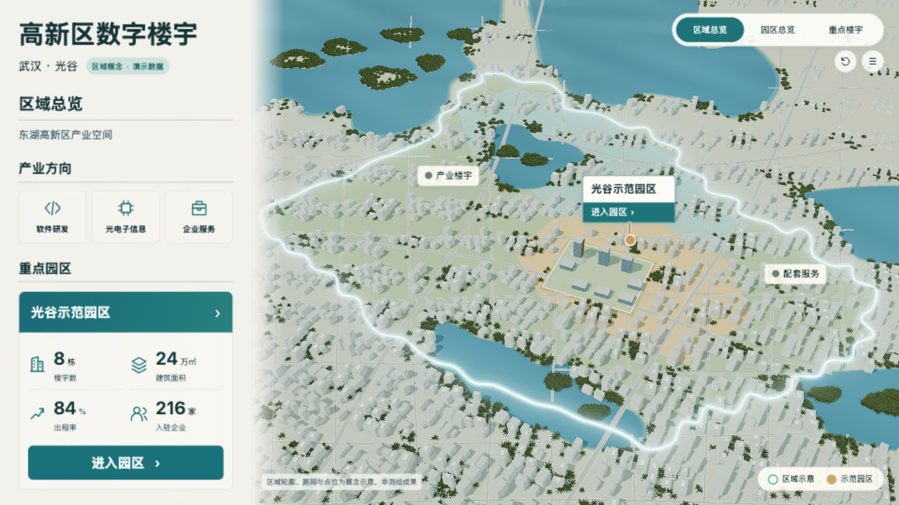
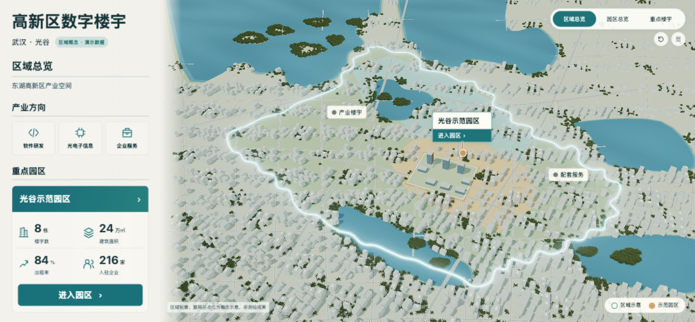
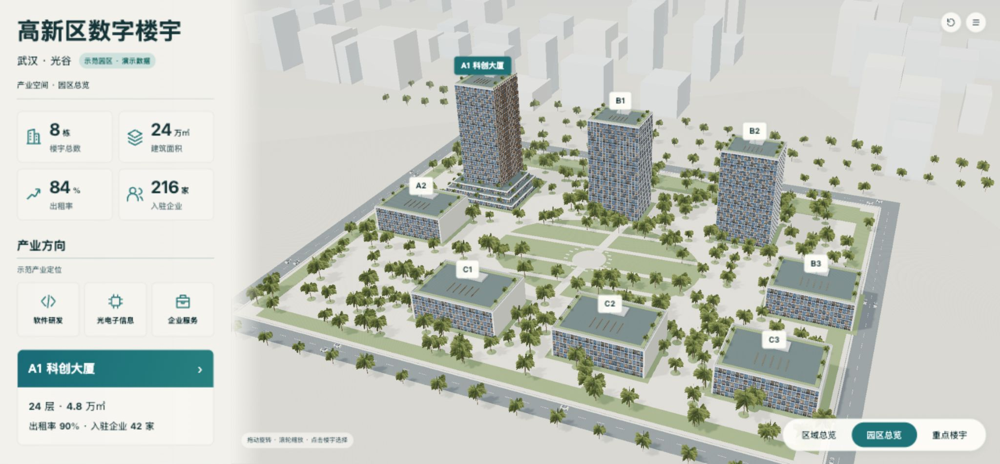
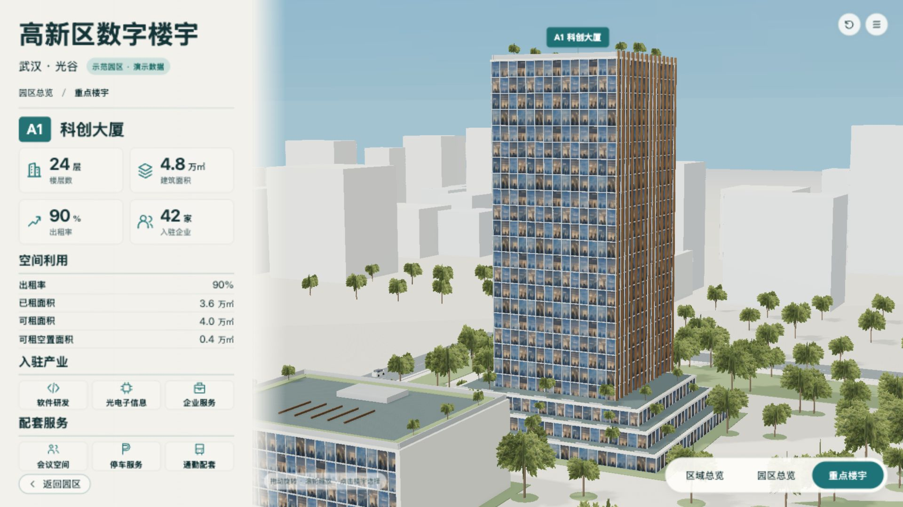
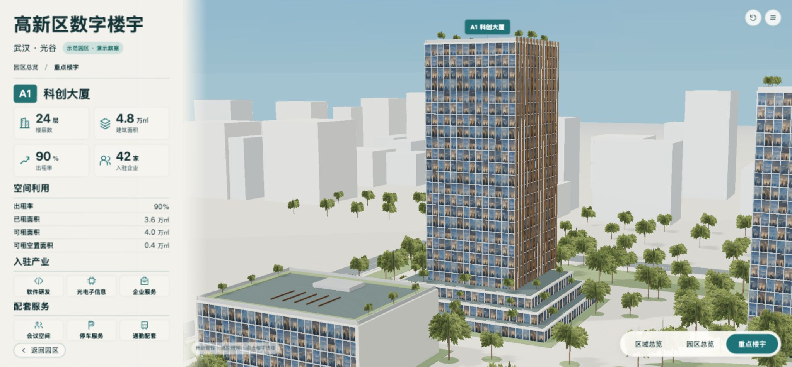

范围：消除固定16:9画布在宽屏两侧的留白。设计基准、规划、模型、默认相机和演示指标保持原有版本。截图保留全部画面，不裁切、不拉伸；车辆位置随实际动画时刻变化。
FW-01：原2048×951窗口仅显示约1691像素宽画布；改为扩展逻辑画布，实测左右边界误差小于0.01像素。通过。
FW-02：侧栏保持设计宽度和统一缩放，三维场景吸收横向余量；两场景既有ResizeObserver更新相机纵横比和标签投影。宽屏园区8个标签可见，楼宇详情与区域导航正常。通过。
FW-03：标准1920×1080布局坐标保持原值；1280×720、1600×1000实测无外侧留白及横向溢出。通过。
本轮仅通过窗口适配专项；R-05-REALISM 的城市真实性和概念还原差异继续开放，不视为整屏视觉验收通过。旧v14压缩包是历史快照，本轮以当前源码、dist和本记录为准。







